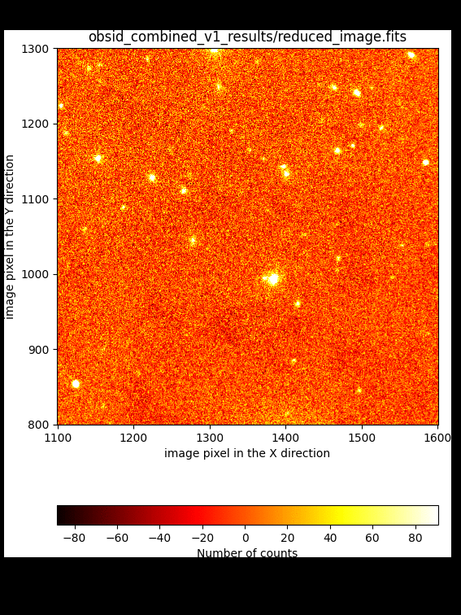

Improving the image combination
The image combination can be improved by tuning some of the parameters of the
recipe FULL_DITHERED_IMAGE (step 2 in the previous section).
In this sense, there is no need to repeat the basic reduction of the individual
exposures (step 1).
As previously mentioned, three are the problems that we want to solve:
Improve the offsets between individual exposures: this can be achieved in several ways:
By setting the requirement
refine_offsets: True: in this case a cross-correlation between subimage regions around bright targets is carried out to derive refined offsets. See subsection Improving offsets (method #1) below.By providing an ASCII file with a list of offsets measured independently by the user and indicated with the requirement
offsets: user_offsets.txt. See subsection Improving offsets (method #2) below.By providing the same ASCII file with precomputed offsets (as in the previous item) and using, in addition, the cross-correlation method. In this case, both requirements
refine_offsets: Trueandoffsets: user_offsets.txtmust be set. See subsection Improving offsets (method #3) below.
Improve the sky background level estimation: the background level can be improved by:
Generating an object mask and iterating the combination process. See subsection Improving the sky background (problem #1) below.
Introducing an ad hoc fit to a low-order polynomial surface to the sky background. See subsection Improving the sky background (problem #2) below.
Take into account the doughnut-like shape that appears in the superflatfield: this can be done by fitting the doughnut-like shape by a smooth surface (using a smoothing kernel in polar coordinates that helps to fit the azimuthal shape). See subsection Improving the superflatfield below.
Improving offsets (method #1)
We can activate the use of 2D cross-correlation of subimages around bright
targets to obtain refined offsets. This method works only if the initial
offsets (either derived from the WCS information in the image headers or from
an external file provided by the user) are a reasonable approximation to the
refined values. To activate this option it it necessary to set the requirement
refine_offsets: True in the observation result file.
This option is already set in line number 148 of the file dithered_v1.yaml,
available in the downloaded package for this tutorial (note that the id in
line 127 has also been changed in order to avoid overwriting the work and
results subdirectories from the execution of dithered_v0.yaml).
127id: _combined_v1
128instrument: EMIR
129mode: FULL_DITHERED_IMAGE
130children:
131 - _0001877553
132 - _0001877559
133 - _0001877565
134 - _0001877571
135 - _0001877577
136 - _0001877583
137 - _0001877589
138 - _0001877595
139 - _0001877601
140 - _0001877607
141 - _0001877613
142 - _0001877619
143 - _0001877625
144 - _0001877631
145requirements:
146 iterations: 0
147 sky_images: 0
148 refine_offsets: True
149enabled: True
The refined version of the combined image is then obtained by executing numina again with this new observation result file:
(emir) $ numina run dithered_v1.yaml --link-files -r control.yaml
{kind=link}

Improving offsets (method #2)
An alternative to the use of the offsets computed from the WCS information in
the image header is to provide a two-column ASCII file with the measured (X,Y)
coordinates of a reference object (i.e., the centroid of a bright star) in
every individual image. These values are employed to determine the relative
offsets between the individual exposures. The (arbitray) name of that file must
be provided through the requirement offsets:. For this tutoral, we are
providing such a file with the name user_offsets.txt. Note that this file
must be placed within the data subdirectory.
The observation result file dithered_v2.yaml is similar to the initial
dithered_v0.yaml file, with the inclusion of the new requirement (line
number 148; note also the id change in line 127):
127id: _combined_v2
128instrument: EMIR
129mode: FULL_DITHERED_IMAGE
130children:
131 - _0001877553
132 - _0001877559
133 - _0001877565
134 - _0001877571
135 - _0001877577
136 - _0001877583
137 - _0001877589
138 - _0001877595
139 - _0001877601
140 - _0001877607
141 - _0001877613
142 - _0001877619
143 - _0001877625
144 - _0001877631
145requirements:
146 iterations: 0
147 sky_images: 0
148 offsets: user_offsets.txt
149 refine_offsets: False
150enabled: True
The contents of the ASCII file with the measured offsets is the following:
(emir) $ cat data/user_offsets.txt
822 907
730 660
555 863
620 998
895 741
545 674
708 811
830 911
735 666
561 868
626 1003
901 746
551 679
715 816
Execute numina to obtain the new version of the combined image:
(emir) $ numina run dithered_v2.yaml --link-files -r control.yaml
{kind=link}
{kind=link}
Improving offsets (method #3)
It is also possible to combine both the offsets provided by the user through an external ASCII file, as well as the cross-correlation method to improve those numbers.
The last lines of the new observation result file dithered_v3.yaml, which
differs only in two lines with dithered_v2.yaml, are the
following:
127id: _combined_v3
128instrument: EMIR
129mode: FULL_DITHERED_IMAGE
130children:
131 - _0001877553
132 - _0001877559
133 - _0001877565
134 - _0001877571
135 - _0001877577
136 - _0001877583
137 - _0001877589
138 - _0001877595
139 - _0001877601
140 - _0001877607
141 - _0001877613
142 - _0001877619
143 - _0001877625
144 - _0001877631
145requirements:
146 iterations: 0
147 sky_images: 0
148 offsets: user_offsets.txt
149 refine_offsets: True
150enabled: True
In this case we have modified the id (line 127) and set
refine_offsets: True (line 149).
Execute numina again with this new observation result file:
(emir) $ numina run dithered_v3.yaml --link-files -r control.yaml
The comparison with the result obtained by refining the offsets initially computed from the WCS information indicates that both methods lead to basically the same result.
{kind=link}
{kind=link}
Note
The conclusion of these comparisons is that the user can rely on the offsets computed from the WCS information in the image headers as a reasonable initial guess, but that these offsets need to be refined. Unless something is really wrong with that WCS information, the user probabily will not need to measure the offsets manually. Anyway, this last option is always there just in case it is necessary.
Improving the sky background (problem #1)
The first obvious way to improve the background computation is by masking the
objects present in the image. This masking process requires an initial object
detection, that must be carried out on the result of an initial image
combination. For that reason, this masking requires to set iterations to a
number larger than zero.
In addition, the user can indicate that the sky signal at each pixel must be computed from the signal at the same pixel in a predefined number of images (close in observing time).
The observation result file dithered_v4.yaml (which is the same as
dithered_v1.yaml except for three modified lines) includes both options:
127id: _combined_v4
128instrument: EMIR
129mode: FULL_DITHERED_IMAGE
130children:
131 - _0001877553
132 - _0001877559
133 - _0001877565
134 - _0001877571
135 - _0001877577
136 - _0001877583
137 - _0001877589
138 - _0001877595
139 - _0001877601
140 - _0001877607
141 - _0001877613
142 - _0001877619
143 - _0001877625
144 - _0001877631
145requirements:
146 iterations: 1
147 sky_images: 6
148 refine_offsets: True
149enabled: True
In this example we are using:
iterations: 1: after a first combination (that can be considered as iteration number zero) one iteration is performed (number 1), which allows the code to detect the objects in the image and make use of a mask of objects in order to compute a better sky background.
sky_images: 6: this number (which must be even) indicates de total number of images employed to determine the sky background. In most cases this means that the code will make use of 3 images obtained before and 3 images obtained after the one for which the sky background is being computed. Obviously, when considering the first (or the last) image in the sequence, no previous (or after) images are available: in these cases the 6 images correspond to exposures obtained after (or before) the one considered. Since in our example we are using a sequence of exposures in which a pattern of 7 dithered exposures was followed, only 6 images after (or before) any particular exposure correspond to different telescope pointings. That is the reason for choosingsky_images: 6(it is the maximum number of exposures before repeating the same dithering pointing).
Note that refine_offsets: True is also being used, but without setting
offsets with an external ASCII file (i.e., the initial offsets will be
computed from the WCS information in the image headers).
Execute numina to start the reduction including object masking:
(emir) $ numina run dithered_v4.yaml --link-files -r control.yaml
It is useful to subtract the new result from the one derived previously:
(emir) $ numina-imath obsid_combined_v1_results/reduced_image.fits - \
obsid_combined_v4_results/reduced_image.fits difference_v4.fits
{kind=link}

Improving the sky background (problem #2)
In all the previous examples, the combined images always exhibit variations in the sky background that are clearly visible at the image borders. The reason for that is that some individual exposures (in this particular example the first two individual images), have a wrong image background.
The problem is more severe in the regions where the number of images used for the combination is lower:
{kind=link}

It is also possible to examine the sky-subtracted individual images (files
ending in _rfs_i?.fits within the work subdirectories):

In this case we realize that the first two images exhibit an unexpected
non-flat background (in the previous movie the first two images correspond to
reduced_image_d58cea92-0cd9-11ed-9e29-3c15c2e3dc50_rfs_i1.fits and
reduced_image_e45d0c32-0cd9-11ed-9e29-3c15c2e3dc50_rfs_i1.fits; this can be
easily recognized by having a look to the output of the reduction procedure in
the terminal, or by examining the file
obsid_combined_v4_results/processing.log).
One possibility is to remove the first two images from the list of images to be reduced. This is undesirable because it obviously reduces the depth of the combined image.
Another option is to apply an ad hoc correction, by fitting for example a
low-order 2D polynomial surface to the masked (i.e. removing objects)
sky-subtracted images. This option can be activated by using the requirement
nside_adhoc_sky_correction. We have incorporated that option in the
observation result file dithered_v5.yaml, which also includes an iteration
to generate an object mask (as we did in dithered_v4.yaml):
127id: _combined_v5
128instrument: EMIR
129mode: FULL_DITHERED_IMAGE
130children:
131 - _0001877553
132 - _0001877559
133 - _0001877565
134 - _0001877571
135 - _0001877577
136 - _0001877583
137 - _0001877589
138 - _0001877595
139 - _0001877601
140 - _0001877607
141 - _0001877613
142 - _0001877619
143 - _0001877625
144 - _0001877631
145requirements:
146 iterations: 1
147 sky_images: 6
148 refine_offsets: True
149 nside_adhoc_sky_correction: 10
150enabled: True
Since the problem with the sky background is different for each quadrant of the
EMIR detector, the value of nside_adhoc_sky_correction indicates the number
of subdivisions (in X and Y) in which each quadrant is subdivided. In this case
we are using a pattern of 10 x 10 regions in each quadrant. The median value in
each of these 100 subregions is computed (masking pixels affected by objects)
and a smooth spline surface is fitted to that collection of points.
(emir) $ numina run dithered_v5.yaml --link-files -r control.yaml
{kind=link}

In the last combination (v5) the sky background level is much flatter around
zero, except for those pixels in the combined image where only one single
exposure is available. By looking at the file result_i1_npix.fits it is
possible to check that those pixels are just at the borders of the combined
image.
Improving the superflatfield
Here we are modifying the last observation result file (dithered_v5.yaml)
to generate dithered_v6.yaml. The only change that we need to introduce
here is to set the requirement fit_doughnut: True (line 149; note also the
change in the id in line 127):
127id: _combined_v6
128instrument: EMIR
129mode: FULL_DITHERED_IMAGE
130children:
131 - _0001877553
132 - _0001877559
133 - _0001877565
134 - _0001877571
135 - _0001877577
136 - _0001877583
137 - _0001877589
138 - _0001877595
139 - _0001877601
140 - _0001877607
141 - _0001877613
142 - _0001877619
143 - _0001877625
144 - _0001877631
145requirements:
146 iterations: 1
147 sky_images: 6
148 refine_offsets: True
149 fit_doughnut: True
150 nside_adhoc_sky_correction: 10
151enabled: True
Note that this parameter fit_doughnut is assumed to be False
by default, which means that the correction described next is not performed
unless splicitly stated.
(emir) $ numina run dithered_v6.yaml --link-files -r control.yaml
The refined version of the superflatfield is then obtained by fitting a smooth surface (preserving some azimuthal symmetry) which is applied to the initial superflatfield (dividing by the fitted doughnut-like shape), which provides a quite flat new superflatfield.
In this example, the initial superflatfield computed in iteration 1 (masking objects) is the following:
{kind=link}
The fitted doughnut-like model, displayed using the same cuts is:
{kind=link}
The resulting refined superflatfield, obtained after dividing the initial superflatfield by the fitted surface, has the following aspect:
{kind=link}
In addition, since this doughnut-like shape is present in every single exposure prior to the sky subtraction, the following strategy is followed in order to perform this latter reduction step:
iteration 0: the sky background of each individual exposure is computed as the fitted doughnut-like shape scaled to the median signal (in order to match the sky background).
iteration >= 1: the sky background of every pixel is computed using the information of the same pixel in images close in observing time. In this case the signal of the doughnut-like shape is considered to be the same in all these images (which seems to be a reasonable assumption), and there is no need to make use of the fitted doughnut-like shape (except for the computation of the refined superflatfield itself).
We can easily compare the new result with the one obtained using
dithered_v5.yaml. For that purpose is useful to subtract the new result from the one derived previously:
(emir) $ numina-imath obsid_combined_v6_results/reduced_image.fits - \
obsid_combined_v5_results/reduced_image.fits difference_v6.fits
{kind=link}
In this particular example, the introduction of the refined superflatfield introduces changes in the signal of some objects that can be as large as 20%, depending on the location of the targets relative to the doughnut-like shape (which also changes from exposure to exposure when taking into account the dithering pattern). In general, the signal of the objects falling close the the peak of the doughnut-like shape is enhanced (in comparison with what it is obtained when the refined superflatfield is not computed), while the contrary is true for the objects closer to the center of the doughnut shape.